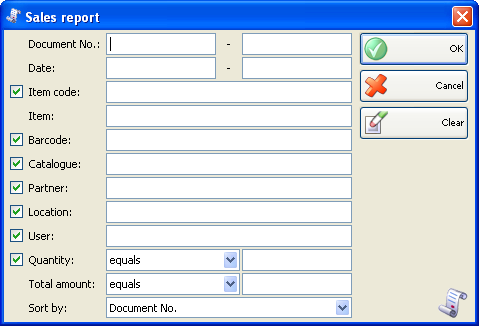
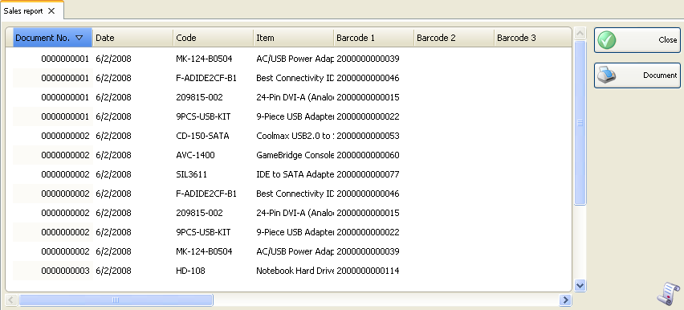

Raport vanzari
Raportul vanzari afiseaza in ordine cronologica documentele de vanzare si articole asupra carora nu s-au efectuat operatii aritmetice sau de grupare. Fiecare din aceste documente se pot afisa pe un rand si toate documentele se pot afisa impreuna. Acest raport poate fi folosit pentru a urmari intrarile dupa documente, dupa utilizator, dupa data, etc. fara insumarea documentelor sau a articolelor. Fiecare rand in documente corespunde unui rand din raport.
In prima fereastra a raportului se pot specifica criteriile de filtrare si campurile care se vor vizualiza.
Numai randurile bifate se vor vizualiza in raport.

Se pot allege filtrari pentru fiecare camp prin apasarea tastei� F4.
Se poate limita raportul la un singur criteriu de filtrare � de exemplu, vizualizare vanzari pentru un singur articol sau se pot aplica mai multe criterii de filtrare in acelasi timp � de exemplu, vizualizare vanzari de la un anumit partener si o anumita localizare pentru o anumita perioada de timp.
Se poate selecta un criteriu de sortare cu �Sort� din partea de jos a listei. Puteti alege dintre data document, numar document, nume articol si cod articol.
Pentru stergerea filtrarilor specificate, click pe butonul Clear. In aceasta situatie raportul va afisa toate operatiile fara nici o restrictie.
Click pe butonul OK pentru a genera raportul dupa specificarea criteriilor de filtrare. Click pe butonul Cancel pentru inchiderea ferestrei.

�2006-2012 Microinvest, All rights reserved